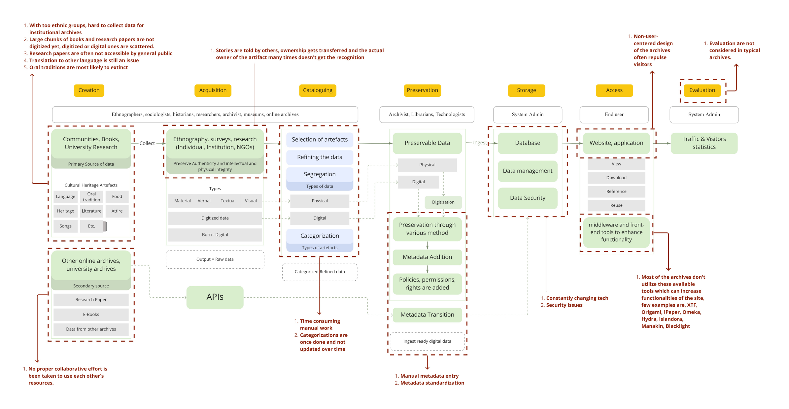
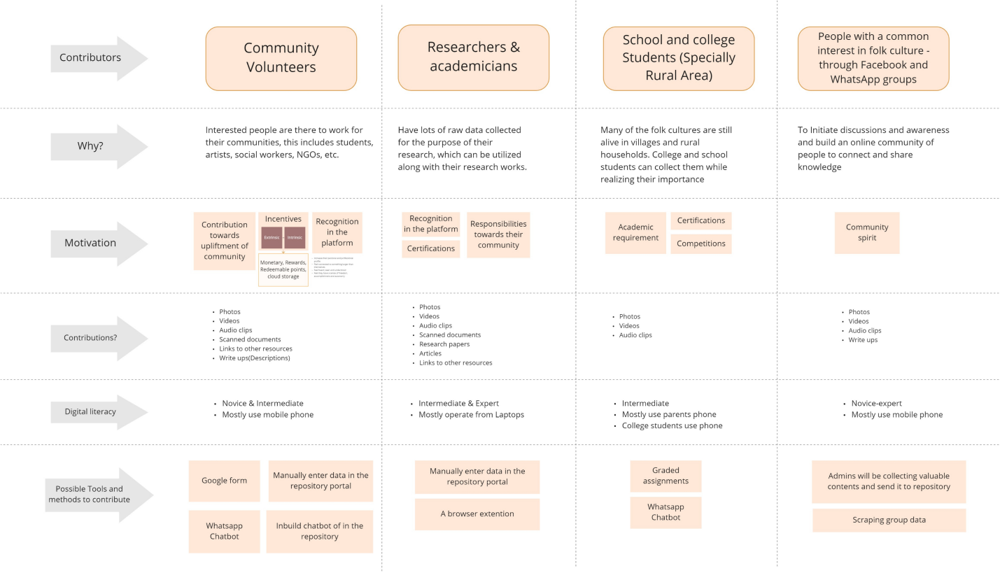
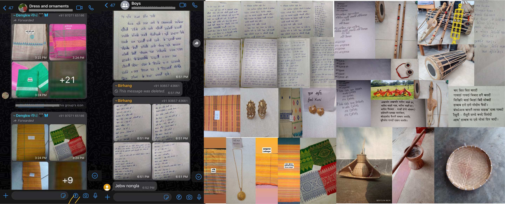

Designing a Participatory Folklore Archive
This is a project focused on preserving and narrating Indian folklores in digital form, through user participation.
Bhoral(ভঁৰাল) in Assamese translates to 'A storehouse to preserve threshed grain for future use'
Motivation
Growing up in Assam, I’ve always been surrounded by a rich tapestry of stories, traditions, and cultural practices. This project stems from a personal desire to preserve these fading narratives in a digital form and make them accessible to future generations.
Rich Heritage : The vibrant culture of Assam is a result of the continuous exchange of ideas and practices between the Indo-Aryans and the tribals.
Folk Heritage : There are 24+ indigenous communities live in Assam and they have been effectively preserving their rich folk heritage orally for a very long time
Threats to the ethnicity : However, the advent of globalization and the cultural migration has had a negative impact on the region's ethnicity.
Problem
The rich folk culture of Assam is on the verge of disappearing, and the institutional archives that are in place right now failed to create a common repository to preserve it and have done nothing to engage the local ethnic groups
Goal
Design an interface that makes browsing and reading folk tales engaging, while respecting their cultural origins and keeping them open for community contribution.
Design Process
Not a planned process, but a series of steps that evolved organically as I learned more about the subject. But a large part of the process was spent on understanding the Archival system and the workflow of digital archiving to see it from a system design perspective hoping to find areas of improvement or any alternate interventions that fits our need.

System Decomposition

I started with understanding the workflow of digital archiving to see it from a system design perspective hoping to find areas of improvement or any alternate interventions that fits our need. With a in depth system decomposition we got many loopholes both technical as well as at process level, which opens our road further to work on a more efficient solution.
Key Problems & Design Directions
An affinity mapping of all these problems resulted in these 7 major problems areas.
Archiving isn't a solo endeavor
Scoping Down
Building an archival platform requires collaboration from individuals across different fields, operating within an institution. As a designer, selecting the right problem area, regardless of personal motivations, proved challenging. I had to focus on the areas that were most relevant to my role as a designer. So looking at the timeframe and resources, the scope has been narrowed down to two verticals from the 7 identified solutions
Identifying a suitable data collection method
Data collection and curation is challenging. Firstly, gathering raw data democratically proves difficult in diverse regions; secondly, there's a lack of meaningful connection with already available resources; thirdly, accessibility to a broader audience is overlooked; finally, there's low local awareness and difficulty in curation.
Four methods were Identified after going through existing research and discussions with experts, those are -
1. Community Volunteers
2. Researchers and Scholars
3. School and College students
4. People with interest through social Media
A multi-parameter analysis was done to go with one method to test. Which is Evaluation with school students

Testing the method
Test Case Scenario
The goal of the test was to evaluate the effectiveness of involving school students in collecting indigenous folklore data. The study was basically an assignment which was given to the students. The assignment was to document folklores that are found in their home, elderly people, and in their neighborhood.
The following measures were taken to conduct the test:
Bodo Medium School, 9th standard, Class strength - 45
The study was conducted in a Bodo medium school in the Kokrajhar district of Bodoland(Assam). Bodo is an Indigenous community of Assam. I have chosen the class 9th standard students so that a level of maturity among the students exists and there is no stress of board exams too. There were 45 students in the classroom(same proportion of boys and girls).
Classroom discussion with teacher-led examples and category framing.
Firstly they’re introduced to various folklores of the Bodo community by the teacher who also engages them in fruitful discussions about their own culture and traditions. This helped the students to understand the significance of their cultural heritage.
Group formation around a single folk topic, encouraging collaborative observation.
They were told to group together and choose one or two categories of folklore that they likes from the blackboard, these categories were : 1. Food Habits 2. Household materials and Agricultural tools 3. Songs and Dance 4. Musical Instruments 5. Dress and Ornaments 6. Oral folklore - Tales, Myths, Legends, Riddles etc.
Using smartphone for documentation and WhatsApp for Sharing
As many of them have smartphone access, they were told to use it for documentation and share using WhatsApp.
Test Results
A total of 138 folklore artefacts were collected, including 45 unique entries. The study shows strong potential as a scalable, grassroots source of indigenous folklore data.
The study highlighted the potential of community-led folklore documentation, emphasising the importance of structured learning and clear documentation guidelines to improve content quality. Engaging students in rural indigenous schools, particularly through their native languages, can further enhance participation and effectiveness.

Proposed System Mapping
Assuming we successfully amass a substantial content pool from these sources, I proceed to outline a system for an indigenous folklore archive repository.
The system would need to be designed to accommodate the diverse and dynamic nature of community-led folklore documentation, ensuring that the voices and perspectives of the contributors are respected and represented accurately.
It has two main components: a data intake system and the presentation of that data itself.

The additional community led data provides a more comprehensive view of the folklore landscape, capturing the diversity and richness of indigenous knowledge systems. It can support any institutioanl archive to enrich its collection by providing more varied and nuanced content.
Reflection
The study yielded significant success, showcasing the potential of the tested methodology in sourcing folklore data when implemented effectively. System mapping further facilitated the groundwork for designing the repository site. Overall it helped to see the problem with a new lens of participatory design approach, despite being limited by technical, resource and time constraints.
Preserving cultural heritage is becoming increasingly crucial in today's world, and this project aimed to address this need specifically for the state of Assam.THis project holds immense personal significance for me, and I am deeply passionate about seeing it come to fruition in the near future. Throughout the journey, I have encountered valuable lessons and challenges that have further fueled my dedication to this cause. Each experience has provided insights that will serve as guiding beacons, steering me to do even better work in the field of cultural heritage preservation